PHOTOGRAPHY PORTFOLIO
Places, people,
and moments. ☆
A growing collection of landscape and portrait photography.
01 — LANDSCAPE
Landscape
Places I've been and things I've noticed.


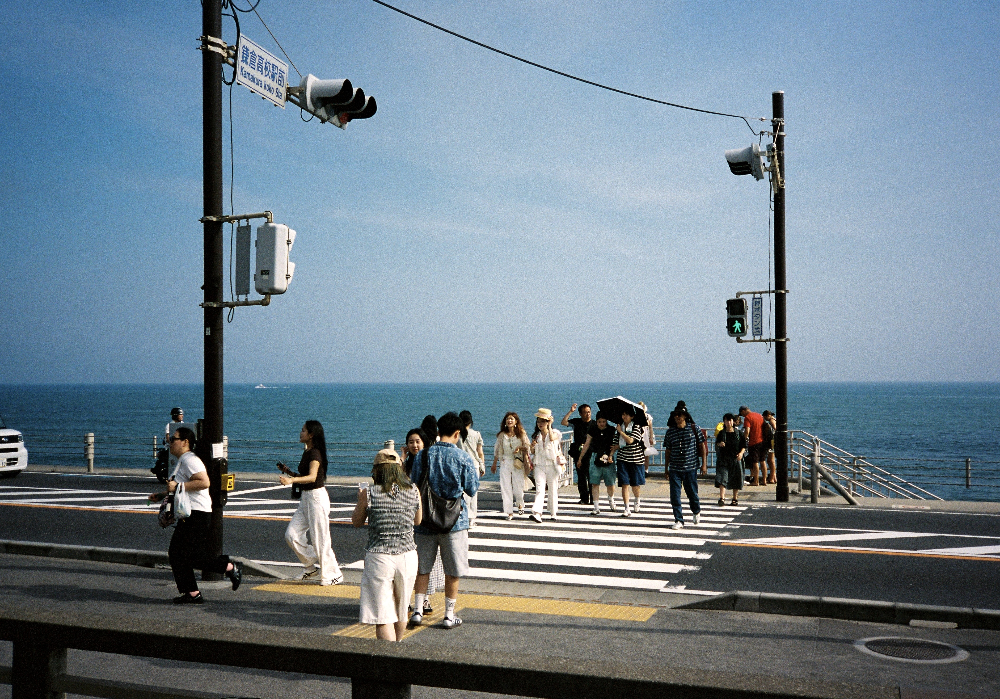
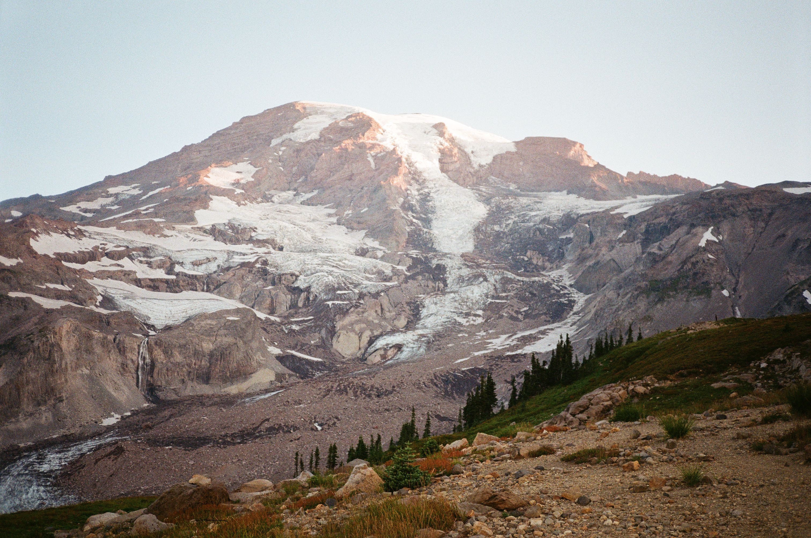

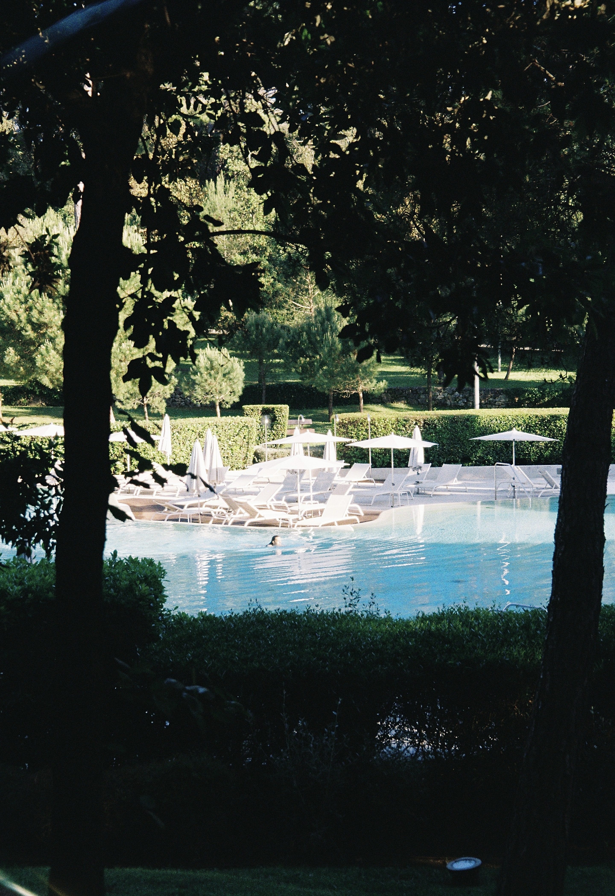
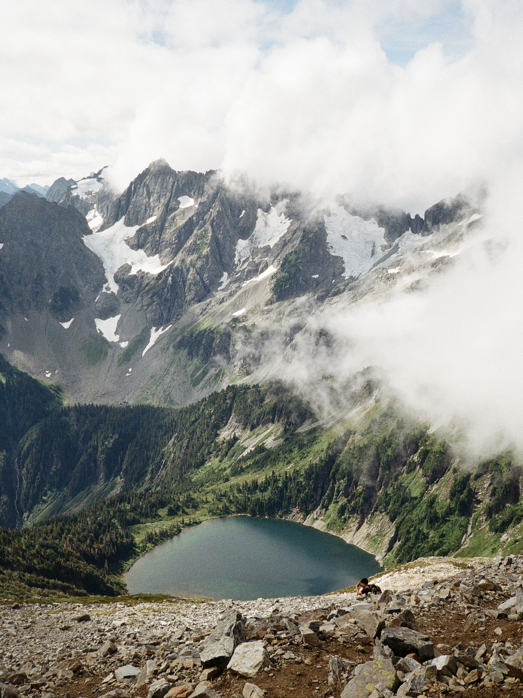
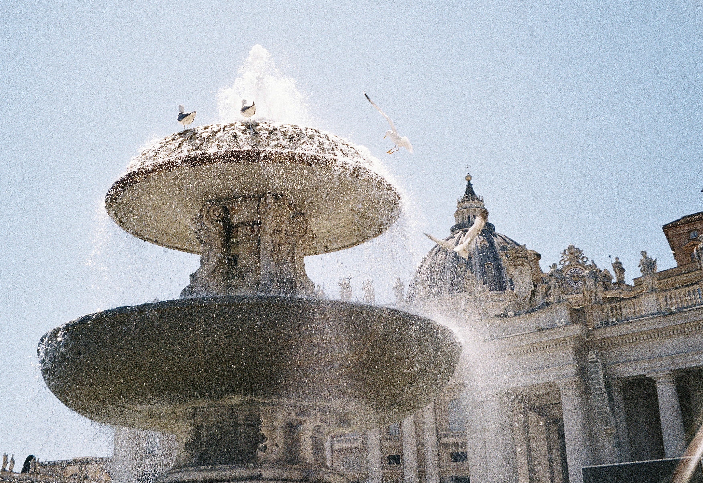
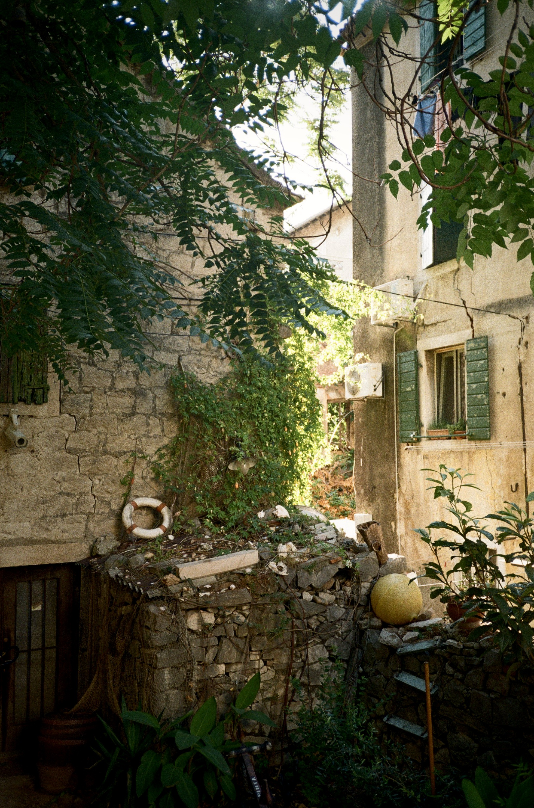
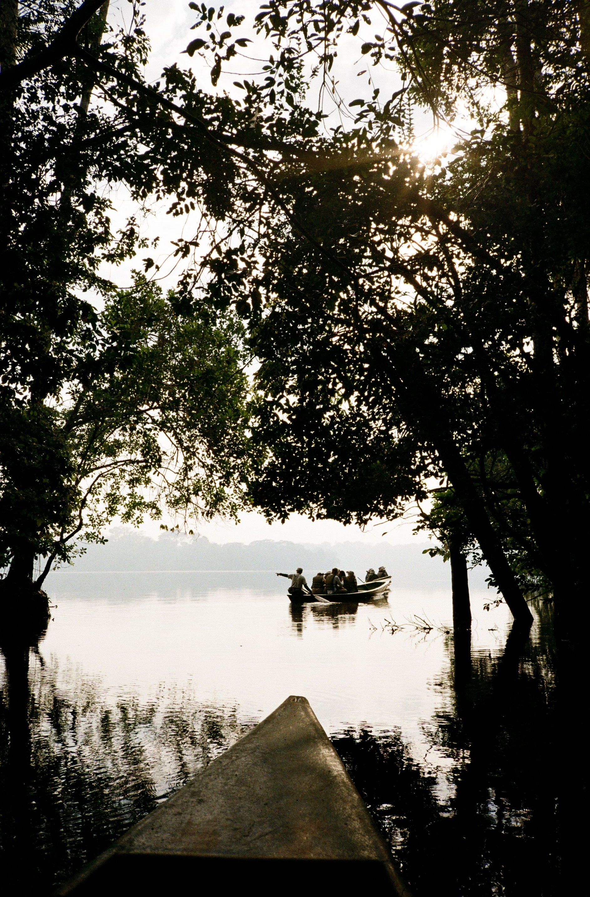
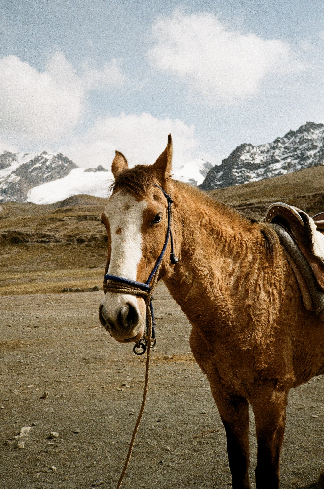
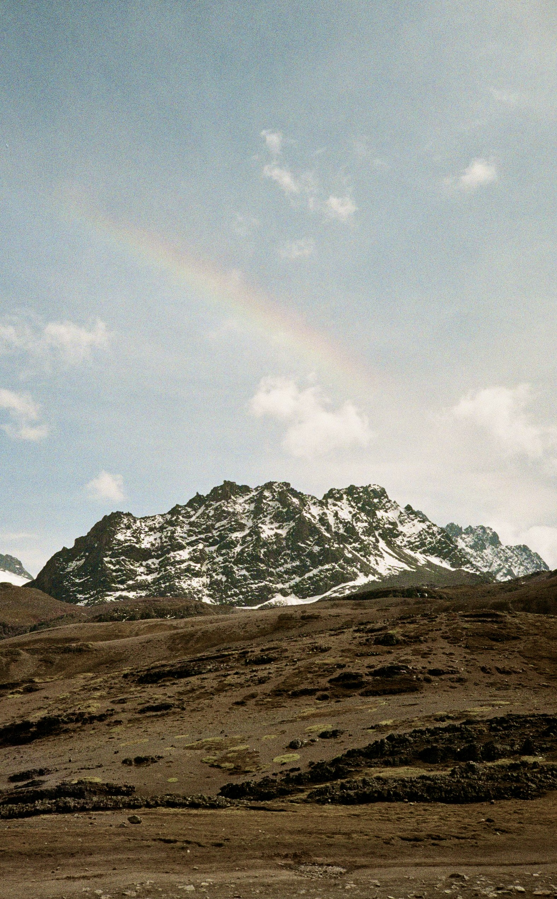
02 — PORTRAIT
Portrait
People, personalities, and little moments.


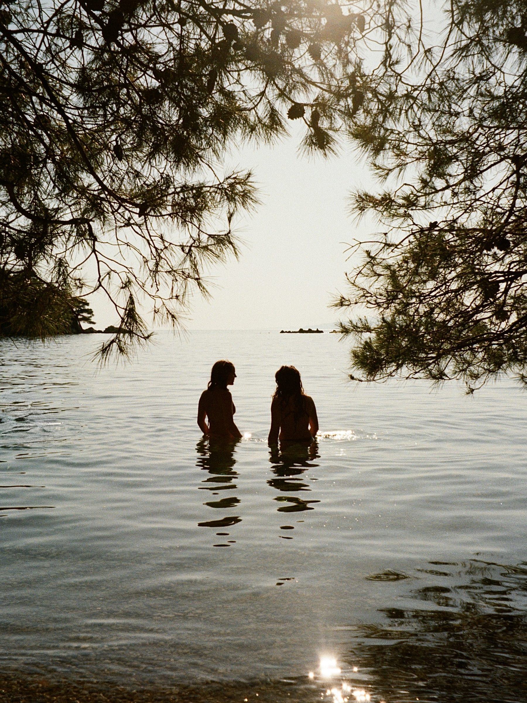
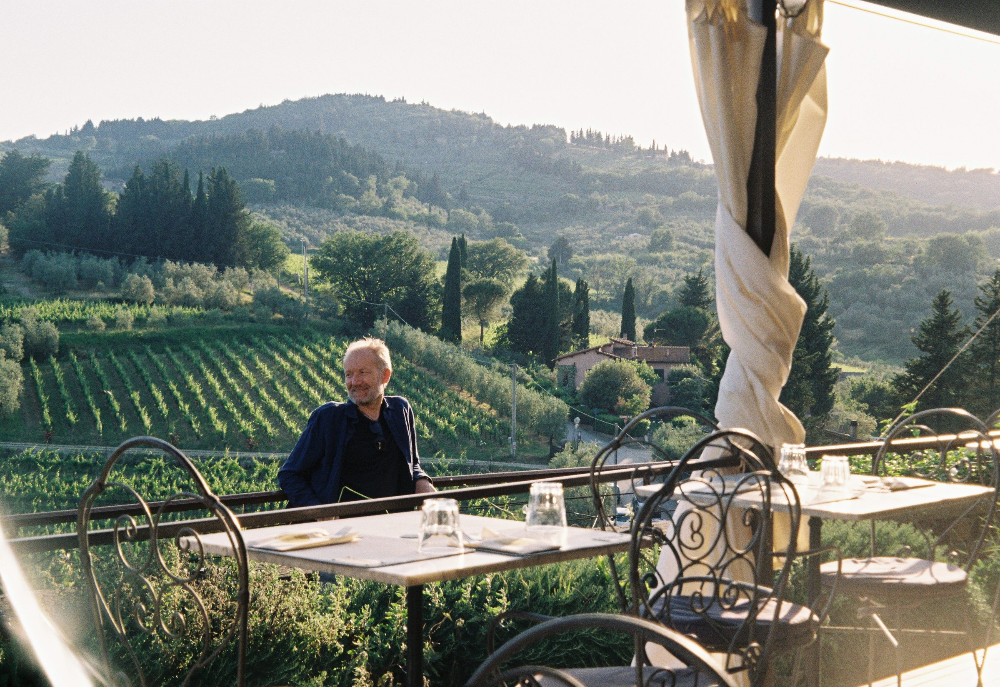

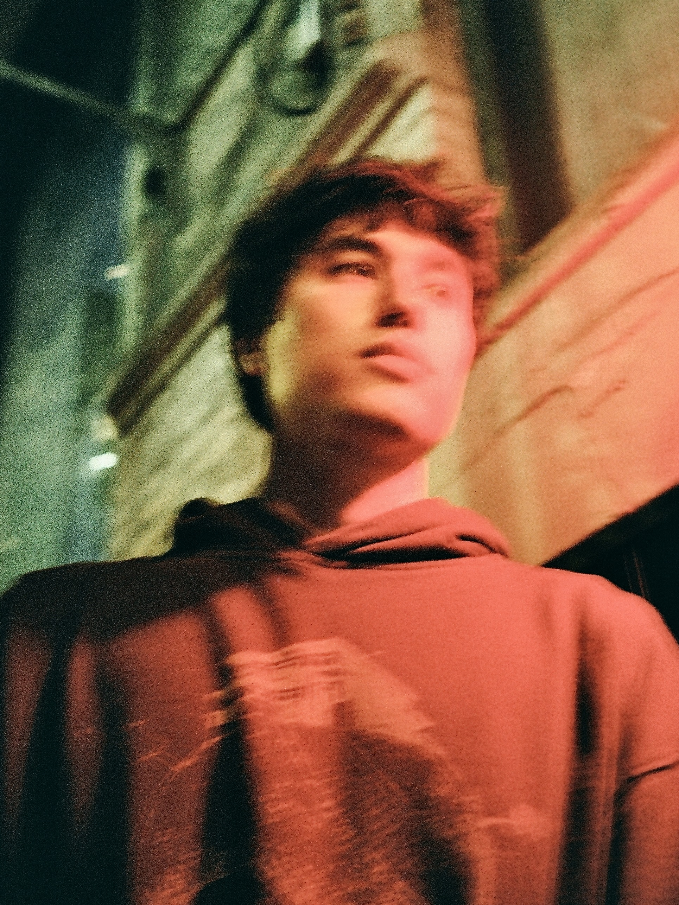
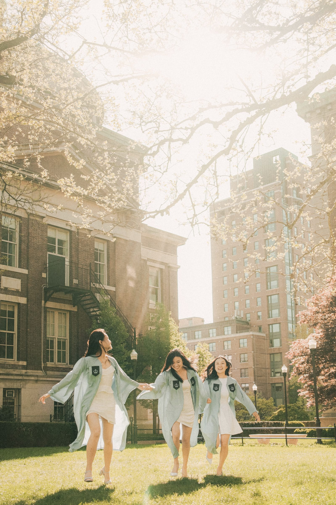
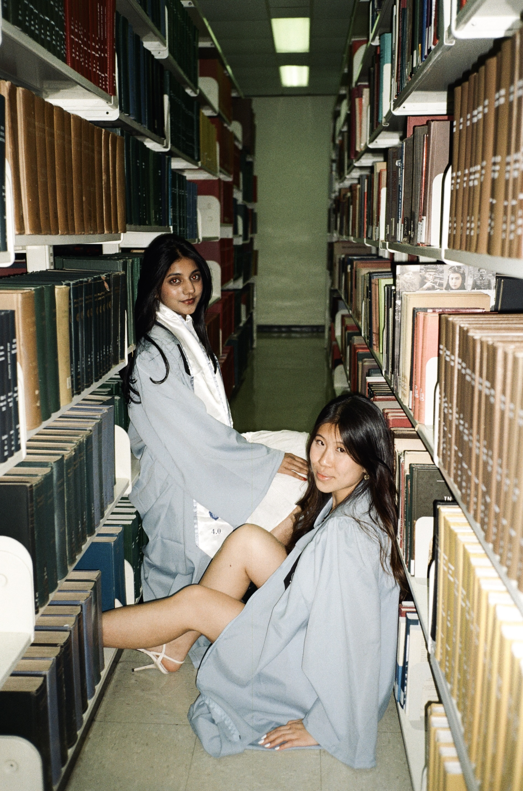
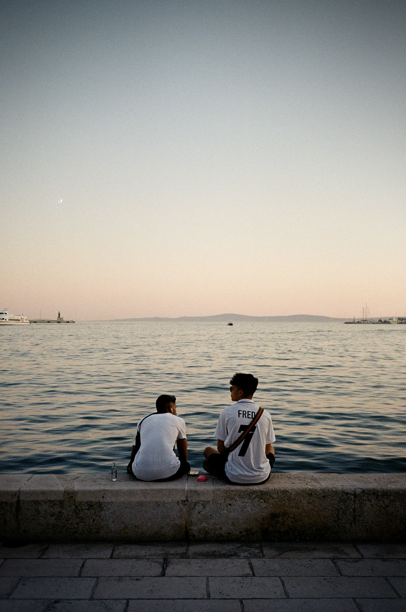